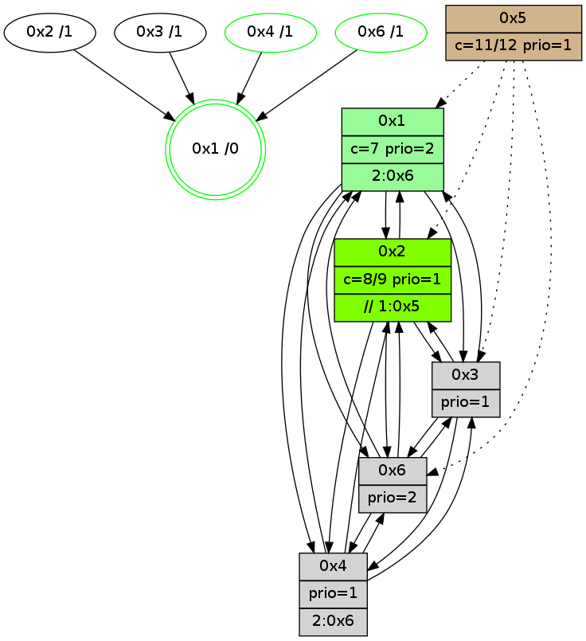

>> << IDX [start] -100 -25 -5 +0 +5 +25 +100 [940.07625699]
 Previous packets
----------------------------------------------------------------------
935.155172 beacon01(adaf) #0 coord=01,02,05,03,04,06 cycle=432.0ms assoc
-- color-indic=1 64 ef 56
935.165133 beacon02(adaf) #0 coord=01,02,05,03,04,06 cycle=432.0ms assoc 64 be a9
935.175132 beacon05(adaf) #0 coord=01,02,05,03,04,06 cycle=432.0ms assoc 64 18 83
935.185135 beacon03(adaf) #0 coord=01,02,05,03,04,06 cycle=432.0ms assoc 64 84 a7
935.195135 beacon04(adaf) #0 coord=01,02,05,03,04,06 cycle=432.0ms assoc 64 22 8d
935.205134 beacon06(adaf) #0 coord=01,02,05,03,04,06 cycle=432.0ms assoc 64 56 91
935.216844 [Hello(2): seq=1229 sym=3,6,1,4 sysInfo=hasWarning stat=3:1,1,0,0/6:0,0,1,0/1:10,12,12,0/4:1,1,1,1]
935.219517 [STC(3)->6-.->1 #0.120 new-neigh,tree-change,inconsistent-stability,stable,to-color d=2]
935.221175 [Color(4) seq=95 @0:0 prio=1 c=7;1,4,6,8,9]
935.223841 [TreeStatus(3)-.->1 #0.120 new-neigh,tree-change,inconsistent-stability,stable child=1]
935.226319 [Color(3) seq=108 @0:0 prio=1 c=;7]
935.228429 [Hello(1): seq=640 sym=2,4,6,3 sysInfo=hasWarning,coloring-mode-on,ColoringModeRequestCalled stat=2:14,5,8,2/4:4,6,3,1/6:10,0,7,1/3:0,0,0,0]
----------------------------------------------------------------------
935.647284 beacon01(adaf) #0 coord=01,02,05,03,04,06 cycle=432.0ms assoc
-- color-indic=1 64 2b 39
935.657244 beacon02(adaf) #0 coord=01,02,05,03,04,06 cycle=432.0ms assoc 64 7a c6
935.667245 beacon05(adaf) #0 coord=01,02,05,03,04,06 cycle=432.0ms assoc 64 dc ec
935.677245 beacon03(adaf) #0 coord=01,02,05,03,04,06 cycle=432.0ms assoc 64 40 c8
935.687245 beacon04(adaf) #0 coord=01,02,05,03,04,06 cycle=432.0ms assoc 64 e6 e2
935.697245 beacon06(adaf) #0 coord=01,02,05,03,04,06 cycle=432.0ms assoc 64 92 fe
935.708758 [TreeStatus(2)-.->1 #0.120 new-neigh,tree-change,inconsistent-stability child=1]
935.711310 [Color(1) seq=167 @0:0 color=7 prio=2 >1.@5 c=1,4,6,8,9;0,2,3,5,a]
935.714340 [Hello(4): seq=741 sym=2,1,3 sysInfo=hasWarning stat=2:4,8,1,0/1:9,7,4,0/3:7,3,11,6]
935.718033 [Hello(3): seq=739 sym=6,4,1,2 sysInfo=hasWarning stat=6:9,11,2,2/4:12,11,6,0/1:0,12,13,1/2:9,7,2,0]
----------------------------------------------------------------------
936.139391 beacon01(adaf) #0 coord=01,02,05,03,04,06 cycle=432.0ms assoc
-- color-indic=1 64 67 89
936.149353 beacon02(adaf) #0 coord=01,02,05,03,04,06 cycle=432.0ms assoc 64 36 76
936.159352 beacon05(adaf) #0 coord=01,02,05,03,04,06 cycle=432.0ms assoc 64 90 5c
936.169353 beacon03(adaf) #0 coord=01,02,05,03,04,06 cycle=432.0ms assoc 64 0c 78
936.179354 beacon04(adaf) #0 coord=01,02,05,03,04,06 cycle=432.0ms assoc 64 aa 52
936.189354 beacon06(adaf) #0 coord=01,02,05,03,04,06 cycle=432.0ms assoc 64 de 4e
936.200856 [Hello(1): seq=641 sym=2,4,6,3 sysInfo=hasWarning,coloring-mode-on,ColoringModeRequestCalled stat=2:14,5,8,2/4:4,6,3,1/6:10,0,7,1/3:1,0,0,0]
936.204719 PARSE ERROR************************
Traceback (most recent call last):
File "PacketAnalysis.py", line 167, in showOperaPacket
structPacket = OperaPacketParse.parsePacket(rawPacket)
File "../../pkg-python/HipSens/Core/OperaPacketParse.py", line 461, in parsePacket
return parseHelloMessage(data)
File "../../pkg-python/HipSens/Core/OperaPacketParse.py", line 127, in parseHelloMessage
assert struct.calcsize("H")*len(neighAddrList) == len(linkList)
AssertionError
48 20 02 00 04 ce 00 02 02 08 03 00 06 00 01 00 04 00 53 04 00 02 00 00 4c 08 11 22 01 00 0c db 11 21 4c 72
936.207116 [Color(4) seq=96 @0:0 prio=1 c=7;1,4,6,8,9]
----------------------------------------------------------------------
936.631500 beacon01(adaf) #0 coord=01,02,05,03,04,06 cycle=432.0ms assoc
-- color-indic=1 64 a3 e6
936.641461 beacon02(adaf) #0 coord=01,02,05,03,04,06 cycle=432.0ms assoc 64 f2 19
936.651461 beacon05(adaf) #0 coord=01,02,05,03,04,06 cycle=432.0ms assoc 64 54 33
936.661462 beacon03(adaf) #0 coord=01,02,05,03,04,06 cycle=432.0ms assoc 64 c8 17
936.671461 beacon04(adaf) #0 coord=01,02,05,03,04,06 cycle=432.0ms assoc 64 6e 3d
936.681461 beacon06(adaf) #0 coord=01,02,05,03,04,06 cycle=432.0ms assoc 64 1a 21
936.693201 [Hello(4): seq=742 sym=2,1,3 sysInfo=hasWarning stat=2:4,8,1,0/1:9,7,4,0/3:8,3,11,6]
936.696160 [STC(1) #0.121 new-neigh,tree-change,inconsistent-stability,stable,to-color d=0]
936.698099 [Color(1) seq=168 @0:0 color=7 prio=2 c=1,4,6,8,9;0,2,3,5,a]
936.702249 [Color(5) seq=75 @0:0 color=11/12 prio=1 c=8;4,7,9]
----------------------------------------------------------------------
937.123608 beacon01(adaf) #0 coord=01,02,05,03,04,06 cycle=432.0ms assoc
-- color-indic=1 64 ee e1
937.133570 beacon02(adaf) #0 coord=01,02,05,03,04,06 cycle=432.0ms assoc 64 bf 1e
937.143570 beacon05(adaf) #0 coord=01,02,05,03,04,06 cycle=432.0ms assoc 64 19 34
937.153569 beacon03(adaf) #0 coord=01,02,05,03,04,06 cycle=432.0ms assoc 64 85 10
937.163570 beacon04(adaf) #0 coord=01,02,05,03,04,06 cycle=432.0ms assoc 64 23 3a
937.173570 beacon06(adaf) #0 coord=01,02,05,03,04,06 cycle=432.0ms assoc 64 57 26
937.184449 [Hello(1): seq=642 sym=2,4,6,3 sysInfo=hasWarning,coloring-mode-on,ColoringModeRequestCalled stat=2:15,5,8,2/4:4,6,3,1/6:11,0,7,1/3:1,1,0,0]
937.187125 [STC(4)->1 #0.121 new-neigh,tree-change,inconsistent-stability,stable,to-color d=1]
937.189738 [Color(4) seq=97 @0:0 prio=1 c=7;1,4,6,8,9]
937.192003 [STC(2)->1 #0.121 new-neigh,tree-change,inconsistent-stability,to-color d=1]
937.194160 [STC(3)->1 #0.121 to-color d=1]
----------------------------------------------------------------------
937.615716 beacon01(adaf) #0 coord=01,02,05,03,04,06 cycle=432.0ms assoc
-- color-indic=1 64 2a 8e
937.625677 beacon02(adaf) #0 coord=01,02,05,03,04,06 cycle=432.0ms assoc 64 7b 71
937.635677 beacon05(adaf) #0 coord=01,02,05,03,04,06 cycle=432.0ms assoc 64 dd 5b
937.645678 beacon03(adaf) #0 coord=01,02,05,03,04,06 cycle=432.0ms assoc 64 41 7f
937.655676 beacon04(adaf) #0 coord=01,02,05,03,04,06 cycle=432.0ms assoc 64 e7 55
937.665678 beacon06(adaf) #0 coord=01,02,05,03,04,06 cycle=432.0ms assoc 64 93 49
937.677399 [Hello(4): seq=743 sym=2,1,3 sysInfo=hasWarning stat=2:4,8,2,0/1:10,8,5,0/3:8,3,12,6]
937.679923 [Color(1) seq=169 @0:0 color=7 prio=2 c=1,4,6,8,9,b;0,2,3,5,a]
937.682832 [Color(5) seq=76 @0:0 color=11/12 prio=1 c=8;4,7,9]
----------------------------------------------------------------------
938.107824 beacon01(adaf) #0 coord=01,02,05,03,04,06 cycle=432.0ms assoc
-- color-indic=1 64 66 3e
938.117785 beacon02(adaf) #0 coord=01,02,05,03,04,06 cycle=432.0ms assoc 64 37 c1
938.127786 beacon05(adaf) #0 coord=01,02,05,03,04,06 cycle=432.0ms assoc 64 91 eb
938.137785 beacon03(adaf) #0 coord=01,02,05,03,04,06 cycle=432.0ms assoc 64 0d cf
938.147786 beacon04(adaf) #0 coord=01,02,05,03,04,06 cycle=432.0ms assoc 64 ab e5
938.157787 beacon06(adaf) #0 coord=01,02,05,03,04,06 cycle=432.0ms assoc 64 df f9
938.168991 [Hello(1): seq=643 sym=2,4,6,3 sysInfo=hasWarning,coloring-mode-on,ColoringModeRequestCalled stat=2:0,5,9,2/4:4,6,3,1/6:11,0,7,2/3:1,1,1,0]
938.171663 [Color(4) seq=98 @0:0 prio=1 c=7;1,4,6,8,9,b]
938.173113 [Hello(2): seq=1232 sym=3,6,1,4 sysInfo=hasWarning stat=3:2,3,2,1/6:2,0,1,0/1:12,15,13,0/4:1,2,1,1]
----------------------------------------------------------------------
938.599933 beacon01(adaf) #0 coord=01,02,05,03,04,06 cycle=432.0ms assoc
-- color-indic=1 64 a2 51
938.609893 beacon02(adaf) #0 coord=01,02,05,03,04,06 cycle=432.0ms assoc 64 f3 ae
938.619894 beacon05(adaf) #0 coord=01,02,05,03,04,06 cycle=432.0ms assoc 64 55 84
938.629897 beacon03(adaf) #0 coord=01,02,05,03,04,06 cycle=432.0ms assoc 64 c9 a0
938.639894 beacon04(adaf) #0 coord=01,02,05,03,04,06 cycle=432.0ms assoc 64 6f 8a
938.649896 beacon06(adaf) #0 coord=01,02,05,03,04,06 cycle=432.0ms assoc 64 1b 96
938.661617 [Hello(4): seq=744 sym=2,1,3 sysInfo=hasWarning stat=2:5,8,2,0/1:11,9,5,0/3:8,3,12,6]
938.664267 [Hello(6): seq=657 sym=4,2,1,3 sysInfo=hasWarning stat=4:8,10,3,1/2:1,12,7,1/1:5,1,4,1/3:7,7,14,3]
938.667341 [Color(1) seq=170 @0:0 color=7 prio=2 c=1,4,6,8,9,b;0,2,3,5,a]
938.669133 [Color(6) seq=129 @0:0 prio=2 c=7;1,4,6,8,9,b]
----------------------------------------------------------------------
939.092040 beacon01(adaf) #0 coord=01,02,05,03,04,06 cycle=432.0ms assoc
-- color-indic=1 64 da fc
939.102000 beacon02(adaf) #0 coord=01,02,05,03,04,06 cycle=432.0ms assoc 64 8b 03
939.112002 beacon05(adaf) #0 coord=01,02,05,03,04,06 cycle=432.0ms assoc 64 2d 29
939.122003 beacon03(adaf) #0 coord=01,02,05,03,04,06 cycle=432.0ms assoc 64 b1 0d
939.132002 beacon04(adaf) #0 coord=01,02,05,03,04,06 cycle=432.0ms assoc 64 17 27
939.142002 beacon06(adaf) #0 coord=01,02,05,03,04,06 cycle=432.0ms assoc 64 63 3b
939.153694 [Hello(2): seq=1233 sym=3,6,1,4 sysInfo=hasWarning stat=3:3,3,2,1/6:3,1,1,0/1:12,0,13,0/4:1,2,1,1]
939.156179 [Hello(1): seq=644 sym=2,4,6,3 sysInfo=hasWarning,coloring-mode-on,ColoringModeRequestCalled stat=2:1,5,9,2/4:4,7,3,1/6:11,1,7,2/3:1,1,1,0]
939.158074 [Color(4) seq=99 @0:0 prio=1 >2.@6,1.@3 c=7;1,4,6,8,9,b]
939.159957 [STC(1) #0.122 new-neigh,tree-change,inconsistent-stability,stable,to-color d=0]
----------------------------------------------------------------------
939.584148 beacon01(adaf) #0 coord=01,02,05,03,04,06 cycle=432.0ms assoc
-- color-indic=1 64 1e 93
939.594109 beacon02(adaf) #0 coord=01,02,05,03,04,06 cycle=432.0ms assoc 64 4f 6c
939.604109 beacon05(adaf) #0 coord=01,02,05,03,04,06 cycle=432.0ms assoc 64 e9 46
939.614108 beacon03(adaf) #0 coord=01,02,05,03,04,06 cycle=432.0ms assoc 64 75 62
939.624110 beacon04(adaf) #0 coord=01,02,05,03,04,06 cycle=432.0ms assoc 64 d3 48
939.634110 beacon06(adaf) #0 coord=01,02,05,03,04,06 cycle=432.0ms assoc 64 a7 54
939.645655 [STC(2)->1 #0.122 new-neigh,tree-change,inconsistent-stability,to-color d=1]
939.647743 [Hello(6): seq=658 sym=4,2,1,3 sysInfo=hasWarning stat=4:8,11,3,1/2:2,12,7,1/1:6,1,5,1/3:8,7,14,3]
939.649743 [Hello(4): seq=745 sym=2,1,6,3 sysInfo=hasWarning stat=2:5,8,2,0/1:11,10,6,0/6:0,1,0,0/3:8,3,12,6]
939.652676 [Color(1) seq=171 @0:0 color=7 prio=2 >2.@6 c=1,4,6,8,9,b;0,2,3,5,a]
939.654771 [STC(6)->1 #0.122 new-neigh,tree-change,inconsistent-stability,stable,to-color d=1]
939.657117 [STC(3)->1 #0.122 new-neigh,tree-change,inconsistent-stability,to-color d=1]
939.663067 [STC(4)->1 #0.122 new-neigh,tree-change,inconsistent-stability,stable,to-color d=1]
939.666612 [Color(6) seq=130 @0:0 prio=2 c=7;1,4,6,8,9,b]